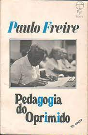

Educação Como Prática da Liberdade (1967). Primeiro livro de Paulo Freire.
O ensaio “Educação como Prática da Liberdade” foi originalmente escrito no exílio de Paulo Freire, em 1965.
No livro, Paulo Freire reporta à experiência pedagógica que realizou, antes do Golpe de 1964, o método de alfabetização de jovens e adultos, no nordeste brasileiro.

Pedagogia do Oprimido (1968). Considerado o seu mais importante livro.
Pedagogia do Oprimido é um dos mais conhecidos trabalhos do educador e filósofo brasileiro Paulo Freire.
O livro propõe uma pedagogia com uma nova forma de relacionamento entre professor, estudante, e sociedade.

Pedagogia da Autonomia (1997). Último livro escrito de Paulo Freire.
Apresenta propostas de práticas pedagógicas necessárias à educação como forma de construir a autonomia dos educandos, valorizando e respeitando sua cultura e seu acervo de conhecimentos empíricos junto à sua individualidade.
A obra reúne experiências e novos métodos, que valorizam a curiosidade dos educandos e educadores, condenando a rigidez ética que se volta aos interesses capitalistas, que deixam à margem do processo de socialização os menos favorecidos.